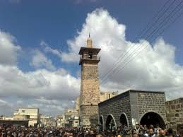
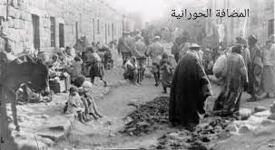
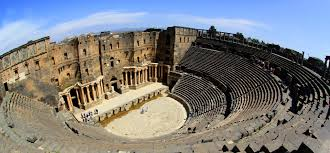

درعا
درعا، بوابة الجنوب السوري، تقع على الحدود مع الأردن وتعتبر من أقدم المدن المأهولة. تشتهر بسهولها الخصبة وزراعة الحبوب والخضروات. لها تاريخ عريق يعود للعصور الآرامية والرومانية، وتضم العديد من المواقع الأثرية الهامة.
أبرز المعالم

مسجد العمري
أحد أقدم المساجد في سوريا، بني في العصر الأموي ويتميز بعمارته الفريدة.

سوق درعا القديم
قلب المدينة التجاري التاريخي، يحتفظ بطابعه التقليدي العريق.

آثار بصرى
مدينة أثرية تعود للعصر الروماني، تضم مسرحاً رومانياً مهماً.